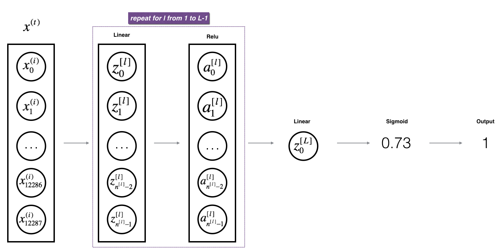
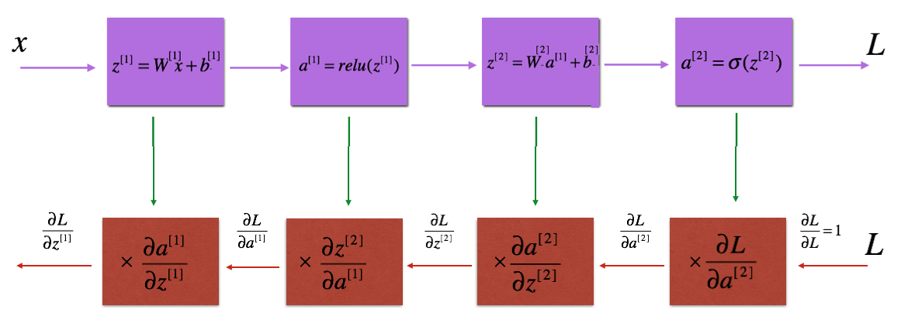
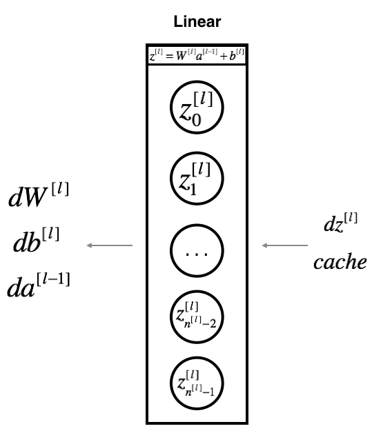
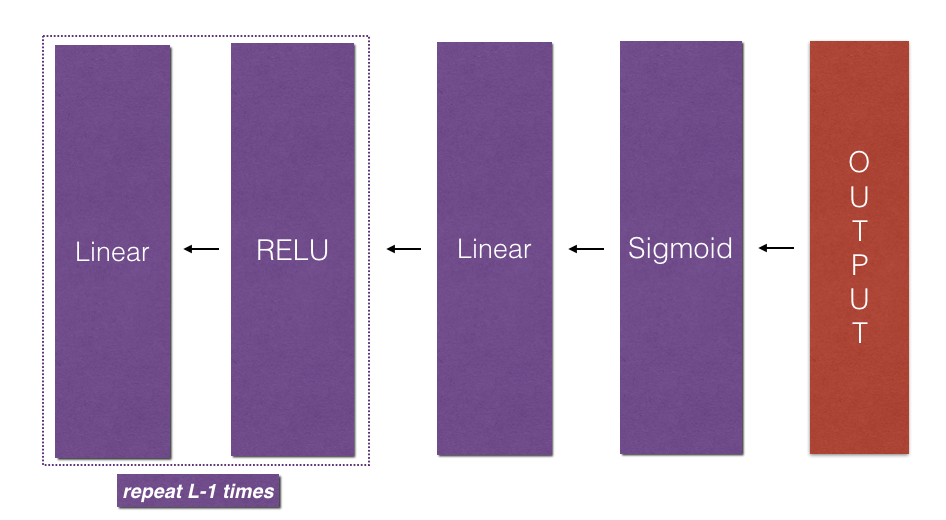

Building your Deep Neural Network: Step by Step#
Welcome to your week 4 assignment (part 1 of 2)! Previously you trained a 2-layer Neural Network with a single hidden layer. This week, you will build a deep neural network with as many layers as you want!
In this notebook, you’ll implement all the functions required to build a deep neural network.
For the next assignment, you’ll use these functions to build a deep neural network for image classification.
By the end of this assignment, you’ll be able to:
Use non-linear units like ReLU to improve your model
Build a deeper neural network (with more than 1 hidden layer)
Implement an easy-to-use neural network class
Notation:
Superscript \([l]\) denotes a quantity associated with the \(l^{th}\) layer.
Example: \(a^{[L]}\) is the \(L^{th}\) layer activation. \(W^{[L]}\) and \(b^{[L]}\) are the \(L^{th}\) layer parameters.
Superscript \((i)\) denotes a quantity associated with the \(i^{th}\) example.
Example: \(x^{(i)}\) is the \(i^{th}\) training example.
Lowerscript \(i\) denotes the \(i^{th}\) entry of a vector.
Example: \(a^{[l]}_i\) denotes the \(i^{th}\) entry of the \(l^{th}\) layer’s activations).
Let’s get started!
Important Note on Submission to the AutoGrader#
Before submitting your assignment to the AutoGrader, please make sure you are not doing the following:
You have not added any extra
printstatement(s) in the assignment.You have not added any extra code cell(s) in the assignment.
You have not changed any of the function parameters.
You are not using any global variables inside your graded exercises. Unless specifically instructed to do so, please refrain from it and use the local variables instead.
You are not changing the assignment code where it is not required, like creating extra variables.
If you do any of the following, you will get something like, Grader Error: Grader feedback not found (or similarly unexpected) error upon submitting your assignment. Before asking for help/debugging the errors in your assignment, check for these first. If this is the case, and you don’t remember the changes you have made, you can get a fresh copy of the assignment by following these instructions.
Table of Contents#
1 - Packages#
First, import all the packages you’ll need during this assignment.
numpy is the main package for scientific computing with Python.
matplotlib is a library to plot graphs in Python.
dnn_utils provides some necessary functions for this notebook.
testCases provides some test cases to assess the correctness of your functions
np.random.seed(1) is used to keep all the random function calls consistent. It helps grade your work. Please don’t change the seed!
### v1.2
import numpy as np
import h5py
import matplotlib.pyplot as plt
from testCases import *
from dnn_utils import sigmoid, sigmoid_backward, relu, relu_backward
from public_tests import *
import copy
%matplotlib inline
plt.rcParams['figure.figsize'] = (5.0, 4.0) # set default size of plots
plt.rcParams['image.interpolation'] = 'nearest'
plt.rcParams['image.cmap'] = 'gray'
%load_ext autoreload
%autoreload 2
np.random.seed(1)
2 - Outline#
To build your neural network, you’ll be implementing several “helper functions.” These helper functions will be used in the next assignment to build a two-layer neural network and an L-layer neural network.
Each small helper function will have detailed instructions to walk you through the necessary steps. Here’s an outline of the steps in this assignment:
Initialize the parameters for a two-layer network and for an \(L\)-layer neural network
Implement the forward propagation module (shown in purple in the figure below)
Complete the LINEAR part of a layer’s forward propagation step (resulting in \(Z^{[l]}\)).
The ACTIVATION function is provided for you (relu/sigmoid)
Combine the previous two steps into a new [LINEAR->ACTIVATION] forward function.
Stack the [LINEAR->RELU] forward function L-1 time (for layers 1 through L-1) and add a [LINEAR->SIGMOID] at the end (for the final layer \(L\)). This gives you a new L_model_forward function.
Compute the loss
Implement the backward propagation module (denoted in red in the figure below)
Complete the LINEAR part of a layer’s backward propagation step
The gradient of the ACTIVATION function is provided for you(relu_backward/sigmoid_backward)
Combine the previous two steps into a new [LINEAR->ACTIVATION] backward function
Stack [LINEAR->RELU] backward L-1 times and add [LINEAR->SIGMOID] backward in a new L_model_backward function
Finally, update the parameters

Note:
For every forward function, there is a corresponding backward function. This is why at every step of your forward module you will be storing some values in a cache. These cached values are useful for computing gradients.
In the backpropagation module, you can then use the cache to calculate the gradients. Don’t worry, this assignment will show you exactly how to carry out each of these steps!
3 - Initialization#
You will write two helper functions to initialize the parameters for your model. The first function will be used to initialize parameters for a two layer model. The second one generalizes this initialization process to \(L\) layers.
3.1 - 2-layer Neural Network#
Exercise 1 - initialize_parameters#
Create and initialize the parameters of the 2-layer neural network.
Instructions:
The model’s structure is: LINEAR -> RELU -> LINEAR -> SIGMOID.
Use this random initialization for the weight matrices:
np.random.randn(d0, d1, ..., dn) * 0.01with the correct shape. The documentation for np.random.randnUse zero initialization for the biases:
np.zeros(shape). The documentation for np.zeros
# GRADED FUNCTION: initialize_parameters
def initialize_parameters(n_x, n_h, n_y):
"""
Argument:
n_x -- size of the input layer
n_h -- size of the hidden layer
n_y -- size of the output layer
Returns:
parameters -- python dictionary containing your parameters:
W1 -- weight matrix of shape (n_h, n_x)
b1 -- bias vector of shape (n_h, 1)
W2 -- weight matrix of shape (n_y, n_h)
b2 -- bias vector of shape (n_y, 1)
"""
np.random.seed(1)
#(≈ 4 lines of code)
# W1 = ...
# b1 = ...
# W2 = ...
# b2 = ...
# YOUR CODE STARTS HERE
# YOUR CODE ENDS HERE
parameters = {"W1": W1,
"b1": b1,
"W2": W2,
"b2": b2}
return parameters
print("Test Case 1:\n")
parameters = initialize_parameters(3,2,1)
print("W1 = " + str(parameters["W1"]))
print("b1 = " + str(parameters["b1"]))
print("W2 = " + str(parameters["W2"]))
print("b2 = " + str(parameters["b2"]))
initialize_parameters_test_1(initialize_parameters)
print("\033[90m\nTest Case 2:\n")
parameters = initialize_parameters(4,3,2)
print("W1 = " + str(parameters["W1"]))
print("b1 = " + str(parameters["b1"]))
print("W2 = " + str(parameters["W2"]))
print("b2 = " + str(parameters["b2"]))
initialize_parameters_test_2(initialize_parameters)
Test Case 1:
---------------------------------------------------------------------------
NameError Traceback (most recent call last)
Cell In[4], line 2
1 print("Test Case 1:\n")
----> 2 parameters = initialize_parameters(3,2,1)
4 print("W1 = " + str(parameters["W1"]))
5 print("b1 = " + str(parameters["b1"]))
Cell In[3], line 30, in initialize_parameters(n_x, n_h, n_y)
18 np.random.seed(1)
20 #(≈ 4 lines of code)
21 # W1 = ...
22 # b1 = ...
(...) 27
28 # YOUR CODE ENDS HERE
---> 30 parameters = {"W1": W1,
31 "b1": b1,
32 "W2": W2,
33 "b2": b2}
35 return parameters
NameError: name 'W1' is not defined
Expected output
Test Case 1:
W1 = [[ 0.01624345 -0.00611756 -0.00528172]
[-0.01072969 0.00865408 -0.02301539]]
b1 = [[0.]
[0.]]
W2 = [[ 0.01744812 -0.00761207]]
b2 = [[0.]]
All tests passed.
Test Case 2:
W1 = [[ 0.01624345 -0.00611756 -0.00528172 -0.01072969]
[ 0.00865408 -0.02301539 0.01744812 -0.00761207]
[ 0.00319039 -0.0024937 0.01462108 -0.02060141]]
b1 = [[0.]
[0.]
[0.]]
W2 = [[-0.00322417 -0.00384054 0.01133769]
[-0.01099891 -0.00172428 -0.00877858]]
b2 = [[0.]
[0.]]
All tests passed.
3.2 - L-layer Neural Network#
The initialization for a deeper L-layer neural network is more complicated because there are many more weight matrices and bias vectors. When completing the initialize_parameters_deep function, you should make sure that your dimensions match between each layer. Recall that \(n^{[l]}\) is the number of units in layer \(l\). For example, if the size of your input \(X\) is \((12288, 209)\) (with \(m=209\) examples) then:
| Shape of W | Shape of b | Activation | Shape of Activation | |
| Layer 1 | $(n^{[1]},12288)$ | $(n^{[1]},1)$ | $Z^{[1]} = W^{[1]} X + b^{[1]} $ | $(n^{[1]},209)$ |
| Layer 2 | $(n^{[2]}, n^{[1]})$ | $(n^{[2]},1)$ | $Z^{[2]} = W^{[2]} A^{[1]} + b^{[2]}$ | $(n^{[2]}, 209)$ |
| $\vdots$ | $\vdots$ | $\vdots$ | $\vdots$ | $\vdots$ |
| Layer L-1 | $(n^{[L-1]}, n^{[L-2]})$ | $(n^{[L-1]}, 1)$ | $Z^{[L-1]} = W^{[L-1]} A^{[L-2]} + b^{[L-1]}$ | $(n^{[L-1]}, 209)$ |
| Layer L | $(n^{[L]}, n^{[L-1]})$ | $(n^{[L]}, 1)$ | $Z^{[L]} = W^{[L]} A^{[L-1]} + b^{[L]}$ | $(n^{[L]}, 209)$ |
Remember that when you compute \(W X + b\) in python, it carries out broadcasting. For example, if:
Then \(WX + b\) will be:
Exercise 2 - initialize_parameters_deep#
Implement initialization for an L-layer Neural Network.
Instructions:
The model’s structure is [LINEAR -> RELU] \( \times\) (L-1) -> LINEAR -> SIGMOID. I.e., it has \(L-1\) layers using a ReLU activation function followed by an output layer with a sigmoid activation function.
Use random initialization for the weight matrices. Use
np.random.randn(d0, d1, ..., dn) * 0.01.Use zeros initialization for the biases. Use
np.zeros(shape).You’ll store \(n^{[l]}\), the number of units in different layers, in a variable
layer_dims. For example, thelayer_dimsfor last week’s Planar Data classification model would have been [2,4,1]: There were two inputs, one hidden layer with 4 hidden units, and an output layer with 1 output unit. This meansW1’s shape was (4,2),b1was (4,1),W2was (1,4) andb2was (1,1). Now you will generalize this to \(L\) layers!Here is the implementation for \(L=1\) (one layer neural network). It should inspire you to implement the general case (L-layer neural network).
if L == 1:
parameters["W" + str(L)] = np.random.randn(layer_dims[1], layer_dims[0]) * 0.01
parameters["b" + str(L)] = np.zeros((layer_dims[1], 1))
# GRADED FUNCTION: initialize_parameters_deep
def initialize_parameters_deep(layer_dims):
"""
Arguments:
layer_dims -- python array (list) containing the dimensions of each layer in our network
Returns:
parameters -- python dictionary containing your parameters "W1", "b1", ..., "WL", "bL":
Wl -- weight matrix of shape (layer_dims[l], layer_dims[l-1])
bl -- bias vector of shape (layer_dims[l], 1)
"""
np.random.seed(3)
parameters = {}
L = len(layer_dims) # number of layers in the network
for l in range(1, L):
#(≈ 2 lines of code)
# parameters['W' + str(l)] = ...
# parameters['b' + str(l)] = ...
# YOUR CODE STARTS HERE
# YOUR CODE ENDS HERE
assert(parameters['W' + str(l)].shape == (layer_dims[l], layer_dims[l - 1]))
assert(parameters['b' + str(l)].shape == (layer_dims[l], 1))
return parameters
print("Test Case 1:\n")
parameters = initialize_parameters_deep([5,4,3])
print("W1 = " + str(parameters["W1"]))
print("b1 = " + str(parameters["b1"]))
print("W2 = " + str(parameters["W2"]))
print("b2 = " + str(parameters["b2"]))
initialize_parameters_deep_test_1(initialize_parameters_deep)
print("\033[90m\nTest Case 2:\n")
parameters = initialize_parameters_deep([4,3,2])
print("W1 = " + str(parameters["W1"]))
print("b1 = " + str(parameters["b1"]))
print("W2 = " + str(parameters["W2"]))
print("b2 = " + str(parameters["b2"]))
initialize_parameters_deep_test_2(initialize_parameters_deep)
Expected output
Test Case 1:
W1 = [[ 0.01788628 0.0043651 0.00096497 -0.01863493 -0.00277388]
[-0.00354759 -0.00082741 -0.00627001 -0.00043818 -0.00477218]
[-0.01313865 0.00884622 0.00881318 0.01709573 0.00050034]
[-0.00404677 -0.0054536 -0.01546477 0.00982367 -0.01101068]]
b1 = [[0.]
[0.]
[0.]
[0.]]
W2 = [[-0.01185047 -0.0020565 0.01486148 0.00236716]
[-0.01023785 -0.00712993 0.00625245 -0.00160513]
[-0.00768836 -0.00230031 0.00745056 0.01976111]]
b2 = [[0.]
[0.]
[0.]]
All tests passed.
Test Case 2:
W1 = [[ 0.01788628 0.0043651 0.00096497 -0.01863493]
[-0.00277388 -0.00354759 -0.00082741 -0.00627001]
[-0.00043818 -0.00477218 -0.01313865 0.00884622]]
b1 = [[0.]
[0.]
[0.]]
W2 = [[ 0.00881318 0.01709573 0.00050034]
[-0.00404677 -0.0054536 -0.01546477]]
b2 = [[0.]
[0.]]
All tests passed.
4 - Forward Propagation Module#
4.1 - Linear Forward#
Now that you have initialized your parameters, you can do the forward propagation module. Start by implementing some basic functions that you can use again later when implementing the model. Now, you’ll complete three functions in this order:
LINEAR
LINEAR -> ACTIVATION where ACTIVATION will be either ReLU or Sigmoid.
[LINEAR -> RELU] \(\times\) (L-1) -> LINEAR -> SIGMOID (whole model)
The linear forward module (vectorized over all the examples) computes the following equations:
where \(A^{[0]} = X\).
Exercise 3 - linear_forward#
Build the linear part of forward propagation.
Reminder:
The mathematical representation of this unit is \(Z^{[l]} = W^{[l]}A^{[l-1]} +b^{[l]}\). You may also find np.dot() useful. If your dimensions don’t match, printing W.shape may help.
# GRADED FUNCTION: linear_forward
def linear_forward(A, W, b):
"""
Implement the linear part of a layer's forward propagation.
Arguments:
A -- activations from previous layer (or input data): (size of previous layer, number of examples)
W -- weights matrix: numpy array of shape (size of current layer, size of previous layer)
b -- bias vector, numpy array of shape (size of the current layer, 1)
Returns:
Z -- the input of the activation function, also called pre-activation parameter
cache -- a python tuple containing "A", "W" and "b" ; stored for computing the backward pass efficiently
"""
#(≈ 1 line of code)
# Z = ...
# YOUR CODE STARTS HERE
# YOUR CODE ENDS HERE
cache = (A, W, b)
return Z, cache
t_A, t_W, t_b = linear_forward_test_case()
t_Z, t_linear_cache = linear_forward(t_A, t_W, t_b)
print("Z = " + str(t_Z))
linear_forward_test(linear_forward)
Expected output
Z = [[ 3.26295337 -1.23429987]]
4.2 - Linear-Activation Forward#
In this notebook, you will use two activation functions:
Sigmoid: \(\sigma(Z) = \sigma(W A + b) = \frac{1}{ 1 + e^{-(W A + b)}}\). You’ve been provided with the
sigmoidfunction which returns two items: the activation value “a” and a “cache” that contains “Z” (it’s what we will feed in to the corresponding backward function). To use it you could just call:
A, activation_cache = sigmoid(Z)
ReLU: The mathematical formula for ReLu is \(A = RELU(Z) = max(0, Z)\). You’ve been provided with the
relufunction. This function returns two items: the activation value “A” and a “cache” that contains “Z” (it’s what you’ll feed in to the corresponding backward function). To use it you could just call:
A, activation_cache = relu(Z)
For added convenience, you’re going to group two functions (Linear and Activation) into one function (LINEAR->ACTIVATION). Hence, you’ll implement a function that does the LINEAR forward step, followed by an ACTIVATION forward step.
Exercise 4 - linear_activation_forward#
Implement the forward propagation of the LINEAR->ACTIVATION layer. Mathematical relation is: \(A^{[l]} = g(Z^{[l]}) = g(W^{[l]}A^{[l-1]} +b^{[l]})\) where the activation “g” can be sigmoid() or relu(). Use linear_forward() and the correct activation function.
# GRADED FUNCTION: linear_activation_forward
def linear_activation_forward(A_prev, W, b, activation):
"""
Implement the forward propagation for the LINEAR->ACTIVATION layer
Arguments:
A_prev -- activations from previous layer (or input data): (size of previous layer, number of examples)
W -- weights matrix: numpy array of shape (size of current layer, size of previous layer)
b -- bias vector, numpy array of shape (size of the current layer, 1)
activation -- the activation to be used in this layer, stored as a text string: "sigmoid" or "relu"
Returns:
A -- the output of the activation function, also called the post-activation value
cache -- a python tuple containing "linear_cache" and "activation_cache";
stored for computing the backward pass efficiently
"""
if activation == "sigmoid":
#(≈ 2 lines of code)
# Z, linear_cache = ...
# A, activation_cache = ...
# YOUR CODE STARTS HERE
# YOUR CODE ENDS HERE
elif activation == "relu":
#(≈ 2 lines of code)
# Z, linear_cache = ...
# A, activation_cache = ...
# YOUR CODE STARTS HERE
# YOUR CODE ENDS HERE
cache = (linear_cache, activation_cache)
return A, cache
t_A_prev, t_W, t_b = linear_activation_forward_test_case()
t_A, t_linear_activation_cache = linear_activation_forward(t_A_prev, t_W, t_b, activation = "sigmoid")
print("With sigmoid: A = " + str(t_A))
t_A, t_linear_activation_cache = linear_activation_forward(t_A_prev, t_W, t_b, activation = "relu")
print("With ReLU: A = " + str(t_A))
linear_activation_forward_test(linear_activation_forward)
Expected output
With sigmoid: A = [[0.96890023 0.11013289]]
With ReLU: A = [[3.43896131 0. ]]
Note: In deep learning, the “[LINEAR->ACTIVATION]” computation is counted as a single layer in the neural network, not two layers.
4.3 - L-Layer Model#
For even more convenience when implementing the \(L\)-layer Neural Net, you will need a function that replicates the previous one (linear_activation_forward with RELU) \(L-1\) times, then follows that with one linear_activation_forward with SIGMOID.

Exercise 5 - L_model_forward#
Implement the forward propagation of the above model.
Instructions: In the code below, the variable AL will denote \(A^{[L]} = \sigma(Z^{[L]}) = \sigma(W^{[L]} A^{[L-1]} + b^{[L]})\). (This is sometimes also called Yhat, i.e., this is \(\hat{Y}\).)
Hints:
Use the functions you’ve previously written
Use a for loop to replicate [LINEAR->RELU] (L-1) times
Don’t forget to keep track of the caches in the “caches” list. To add a new value
cto alist, you can uselist.append(c).
# GRADED FUNCTION: L_model_forward
def L_model_forward(X, parameters):
"""
Implement forward propagation for the [LINEAR->RELU]*(L-1)->LINEAR->SIGMOID computation
Arguments:
X -- data, numpy array of shape (input size, number of examples)
parameters -- output of initialize_parameters_deep()
Returns:
AL -- activation value from the output (last) layer
caches -- list of caches containing:
every cache of linear_activation_forward() (there are L of them, indexed from 0 to L-1)
"""
caches = []
A = X
L = len(parameters) // 2 # number of layers in the neural network
# Implement [LINEAR -> RELU]*(L-1). Add "cache" to the "caches" list.
# The for loop starts at 1 because layer 0 is the input
for l in range(1, L):
A_prev = A
#(≈ 2 lines of code)
# A, cache = ...
# caches ...
# YOUR CODE STARTS HERE
# YOUR CODE ENDS HERE
# Implement LINEAR -> SIGMOID. Add "cache" to the "caches" list.
#(≈ 2 lines of code)
# AL, cache = ...
# caches ...
# YOUR CODE STARTS HERE
# YOUR CODE ENDS HERE
return AL, caches
t_X, t_parameters = L_model_forward_test_case_2hidden()
t_AL, t_caches = L_model_forward(t_X, t_parameters)
print("AL = " + str(t_AL))
L_model_forward_test(L_model_forward)
Expected output
AL = [[0.03921668 0.70498921 0.19734387 0.04728177]]
Awesome! You’ve implemented a full forward propagation that takes the input X and outputs a row vector \(A^{[L]}\) containing your predictions. It also records all intermediate values in “caches”. Using \(A^{[L]}\), you can compute the cost of your predictions.
5 - Cost Function#
Now you can implement forward and backward propagation! You need to compute the cost, in order to check whether your model is actually learning.
Exercise 6 - compute_cost#
Compute the cross-entropy cost \(J\), using the following formula: $\(-\frac{1}{m} \sum\limits_{i = 1}^{m} (y^{(i)}\log\left(a^{[L] (i)}\right) + (1-y^{(i)})\log\left(1- a^{[L](i)}\right)) \tag{7}\)$
# GRADED FUNCTION: compute_cost
def compute_cost(AL, Y):
"""
Implement the cost function defined by equation (7).
Arguments:
AL -- probability vector corresponding to your label predictions, shape (1, number of examples)
Y -- true "label" vector (for example: containing 0 if non-cat, 1 if cat), shape (1, number of examples)
Returns:
cost -- cross-entropy cost
"""
m = Y.shape[1]
# Compute loss from aL and y.
# (≈ 1 lines of code)
# cost = ...
# YOUR CODE STARTS HERE
# YOUR CODE ENDS HERE
cost = np.squeeze(cost) # To make sure your cost's shape is what we expect (e.g. this turns [[17]] into 17).
return cost
t_Y, t_AL = compute_cost_test_case()
t_cost = compute_cost(t_AL, t_Y)
print("Cost: " + str(t_cost))
compute_cost_test(compute_cost)
Expected Output:
| cost | 0.2797765635793422 |
6 - Backward Propagation Module#
Just as you did for the forward propagation, you’ll implement helper functions for backpropagation. Remember that backpropagation is used to calculate the gradient of the loss function with respect to the parameters.
Reminder:

The purple blocks represent the forward propagation, and the red blocks represent the backward propagation.
Now, similarly to forward propagation, you’re going to build the backward propagation in three steps:
LINEAR backward
LINEAR -> ACTIVATION backward where ACTIVATION computes the derivative of either the ReLU or sigmoid activation
[LINEAR -> RELU] \(\times\) (L-1) -> LINEAR -> SIGMOID backward (whole model)
For the next exercise, you will need to remember that:
bis a matrix(np.ndarray) with 1 column and n rows, i.e: b = [[1.0], [2.0]] (remember thatbis a constant)np.sum performs a sum over the elements of a ndarray
axis=1 or axis=0 specify if the sum is carried out by rows or by columns respectively
keepdims specifies if the original dimensions of the matrix must be kept.
Look at the following example to clarify:
A = np.array([[1, 2], [3, 4]])
print('axis=1 and keepdims=True')
print(np.sum(A, axis=1, keepdims=True))
print('axis=1 and keepdims=False')
print(np.sum(A, axis=1, keepdims=False))
print('axis=0 and keepdims=True')
print(np.sum(A, axis=0, keepdims=True))
print('axis=0 and keepdims=False')
print(np.sum(A, axis=0, keepdims=False))
6.1 - Linear Backward#
For layer \(l\), the linear part is: \(Z^{[l]} = W^{[l]} A^{[l-1]} + b^{[l]}\) (followed by an activation).
Suppose you have already calculated the derivative \(dZ^{[l]} = \frac{\partial \mathcal{L} }{\partial Z^{[l]}}\). You want to get \((dW^{[l]}, db^{[l]}, dA^{[l-1]})\).

The three outputs \((dW^{[l]}, db^{[l]}, dA^{[l-1]})\) are computed using the input \(dZ^{[l]}\).
Here are the formulas you need: $\( dW^{[l]} = \frac{\partial \mathcal{J} }{\partial W^{[l]}} = \frac{1}{m} dZ^{[l]} A^{[l-1] T} \tag{8}\)\( \)\( db^{[l]} = \frac{\partial \mathcal{J} }{\partial b^{[l]}} = \frac{1}{m} \sum_{i = 1}^{m} dZ^{[l](i)}\tag{9}\)\( \)\( dA^{[l-1]} = \frac{\partial \mathcal{L} }{\partial A^{[l-1]}} = W^{[l] T} dZ^{[l]} \tag{10}\)$
\(A^{[l-1] T}\) is the transpose of \(A^{[l-1]}\).
Exercise 7 - linear_backward#
Use the 3 formulas above to implement linear_backward().
Hint:
In numpy you can get the transpose of an ndarray
AusingA.TorA.transpose()
# GRADED FUNCTION: linear_backward
def linear_backward(dZ, cache):
"""
Implement the linear portion of backward propagation for a single layer (layer l)
Arguments:
dZ -- Gradient of the cost with respect to the linear output (of current layer l)
cache -- tuple of values (A_prev, W, b) coming from the forward propagation in the current layer
Returns:
dA_prev -- Gradient of the cost with respect to the activation (of the previous layer l-1), same shape as A_prev
dW -- Gradient of the cost with respect to W (current layer l), same shape as W
db -- Gradient of the cost with respect to b (current layer l), same shape as b
"""
A_prev, W, b = cache
m = A_prev.shape[1]
### START CODE HERE ### (≈ 3 lines of code)
# dW = ...
# db = ... sum by the rows of dZ with keepdims=True
# dA_prev = ...
# YOUR CODE STARTS HERE
# YOUR CODE ENDS HERE
return dA_prev, dW, db
t_dZ, t_linear_cache = linear_backward_test_case()
t_dA_prev, t_dW, t_db = linear_backward(t_dZ, t_linear_cache)
print("dA_prev: " + str(t_dA_prev))
print("dW: " + str(t_dW))
print("db: " + str(t_db))
linear_backward_test(linear_backward)
Expected Output:
dA_prev: [[-1.15171336 0.06718465 -0.3204696 2.09812712]
[ 0.60345879 -3.72508701 5.81700741 -3.84326836]
[-0.4319552 -1.30987417 1.72354705 0.05070578]
[-0.38981415 0.60811244 -1.25938424 1.47191593]
[-2.52214926 2.67882552 -0.67947465 1.48119548]]
dW: [[ 0.07313866 -0.0976715 -0.87585828 0.73763362 0.00785716]
[ 0.85508818 0.37530413 -0.59912655 0.71278189 -0.58931808]
[ 0.97913304 -0.24376494 -0.08839671 0.55151192 -0.10290907]]
db: [[-0.14713786]
[-0.11313155]
[-0.13209101]]
6.2 - Linear-Activation Backward#
Next, you will create a function that merges the two helper functions: linear_backward and the backward step for the activation linear_activation_backward.
To help you implement linear_activation_backward, two backward functions have been provided:
sigmoid_backward: Implements the backward propagation for SIGMOID unit. You can call it as follows:
dZ = sigmoid_backward(dA, activation_cache)
relu_backward: Implements the backward propagation for RELU unit. You can call it as follows:
dZ = relu_backward(dA, activation_cache)
If \(g(.)\) is the activation function,
sigmoid_backward and relu_backward compute $\(dZ^{[l]} = dA^{[l]} * g'(Z^{[l]}). \tag{11}\)$
Exercise 8 - linear_activation_backward#
Implement the backpropagation for the LINEAR->ACTIVATION layer.
# GRADED FUNCTION: linear_activation_backward
def linear_activation_backward(dA, cache, activation):
"""
Implement the backward propagation for the LINEAR->ACTIVATION layer.
Arguments:
dA -- post-activation gradient for current layer l
cache -- tuple of values (linear_cache, activation_cache) we store for computing backward propagation efficiently
activation -- the activation to be used in this layer, stored as a text string: "sigmoid" or "relu"
Returns:
dA_prev -- Gradient of the cost with respect to the activation (of the previous layer l-1), same shape as A_prev
dW -- Gradient of the cost with respect to W (current layer l), same shape as W
db -- Gradient of the cost with respect to b (current layer l), same shape as b
"""
linear_cache, activation_cache = cache
if activation == "relu":
#(≈ 2 lines of code)
# dZ = ...
# dA_prev, dW, db = ...
# YOUR CODE STARTS HERE
# YOUR CODE ENDS HERE
elif activation == "sigmoid":
#(≈ 2 lines of code)
# dZ = ...
# dA_prev, dW, db = ...
# YOUR CODE STARTS HERE
# YOUR CODE ENDS HERE
return dA_prev, dW, db
t_dAL, t_linear_activation_cache = linear_activation_backward_test_case()
t_dA_prev, t_dW, t_db = linear_activation_backward(t_dAL, t_linear_activation_cache, activation = "sigmoid")
print("With sigmoid: dA_prev = " + str(t_dA_prev))
print("With sigmoid: dW = " + str(t_dW))
print("With sigmoid: db = " + str(t_db))
t_dA_prev, t_dW, t_db = linear_activation_backward(t_dAL, t_linear_activation_cache, activation = "relu")
print("With relu: dA_prev = " + str(t_dA_prev))
print("With relu: dW = " + str(t_dW))
print("With relu: db = " + str(t_db))
linear_activation_backward_test(linear_activation_backward)
Expected output:
With sigmoid: dA_prev = [[ 0.11017994 0.01105339]
[ 0.09466817 0.00949723]
[-0.05743092 -0.00576154]]
With sigmoid: dW = [[ 0.10266786 0.09778551 -0.01968084]]
With sigmoid: db = [[-0.05729622]]
With relu: dA_prev = [[ 0.44090989 0. ]
[ 0.37883606 0. ]
[-0.2298228 0. ]]
With relu: dW = [[ 0.44513824 0.37371418 -0.10478989]]
With relu: db = [[-0.20837892]]
6.3 - L-Model Backward#
Now you will implement the backward function for the whole network!
Recall that when you implemented the L_model_forward function, at each iteration, you stored a cache which contains (X,W,b, and z). In the back propagation module, you’ll use those variables to compute the gradients. Therefore, in the L_model_backward function, you’ll iterate through all the hidden layers backward, starting from layer \(L\). On each step, you will use the cached values for layer \(l\) to backpropagate through layer \(l\). Figure 5 below shows the backward pass.

Initializing backpropagation:
To backpropagate through this network, you know that the output is:
\(A^{[L]} = \sigma(Z^{[L]})\). Your code thus needs to compute dAL \(= \frac{\partial \mathcal{L}}{\partial A^{[L]}}\).
To do so, use this formula (derived using calculus which, again, you don’t need in-depth knowledge of!):
dAL = - (np.divide(Y, AL) - np.divide(1 - Y, 1 - AL)) # derivative of cost with respect to AL
You can then use this post-activation gradient dAL to keep going backward. As seen in Figure 5, you can now feed in dAL into the LINEAR->SIGMOID backward function you implemented (which will use the cached values stored by the L_model_forward function).
After that, you will have to use a for loop to iterate through all the other layers using the LINEAR->RELU backward function. You should store each dA, dW, and db in the grads dictionary. To do so, use this formula :
For example, for \(l=3\) this would store \(dW^{[l]}\) in grads["dW3"].
Exercise 9 - L_model_backward#
Implement backpropagation for the [LINEAR->RELU] \(\times\) (L-1) -> LINEAR -> SIGMOID model.
# GRADED FUNCTION: L_model_backward
def L_model_backward(AL, Y, caches):
"""
Implement the backward propagation for the [LINEAR->RELU] * (L-1) -> LINEAR -> SIGMOID group
Arguments:
AL -- probability vector, output of the forward propagation (L_model_forward())
Y -- true "label" vector (containing 0 if non-cat, 1 if cat)
caches -- list of caches containing:
every cache of linear_activation_forward() with "relu" (it's caches[l], for l in range(L-1) i.e l = 0...L-2)
the cache of linear_activation_forward() with "sigmoid" (it's caches[L-1])
Returns:
grads -- A dictionary with the gradients
grads["dA" + str(l)] = ...
grads["dW" + str(l)] = ...
grads["db" + str(l)] = ...
"""
grads = {}
L = len(caches) # the number of layers
m = AL.shape[1]
Y = Y.reshape(AL.shape) # after this line, Y is the same shape as AL
# Initializing the backpropagation
#(1 line of code)
# dAL = ...
# YOUR CODE STARTS HERE
# YOUR CODE ENDS HERE
# Lth layer (SIGMOID -> LINEAR) gradients. Inputs: "dAL, current_cache". Outputs: "grads["dAL-1"], grads["dWL"], grads["dbL"]
#(approx. 5 lines)
# current_cache = ...
# dA_prev_temp, dW_temp, db_temp = ...
# grads["dA" + str(L-1)] = ...
# grads["dW" + str(L)] = ...
# grads["db" + str(L)] = ...
# YOUR CODE STARTS HERE
# YOUR CODE ENDS HERE
# Loop from l=L-2 to l=0
for l in reversed(range(L-1)):
# lth layer: (RELU -> LINEAR) gradients.
# Inputs: "grads["dA" + str(l + 1)], current_cache". Outputs: "grads["dA" + str(l)] , grads["dW" + str(l + 1)] , grads["db" + str(l + 1)]
#(approx. 5 lines)
# current_cache = ...
# dA_prev_temp, dW_temp, db_temp = ...
# grads["dA" + str(l)] = ...
# grads["dW" + str(l + 1)] = ...
# grads["db" + str(l + 1)] = ...
# YOUR CODE STARTS HERE
# YOUR CODE ENDS HERE
return grads
t_AL, t_Y_assess, t_caches = L_model_backward_test_case()
grads = L_model_backward(t_AL, t_Y_assess, t_caches)
print("dA0 = " + str(grads['dA0']))
print("dA1 = " + str(grads['dA1']))
print("dW1 = " + str(grads['dW1']))
print("dW2 = " + str(grads['dW2']))
print("db1 = " + str(grads['db1']))
print("db2 = " + str(grads['db2']))
L_model_backward_test(L_model_backward)
Expected output:
dA0 = [[ 0. 0.52257901]
[ 0. -0.3269206 ]
[ 0. -0.32070404]
[ 0. -0.74079187]]
dA1 = [[ 0.12913162 -0.44014127]
[-0.14175655 0.48317296]
[ 0.01663708 -0.05670698]]
dW1 = [[0.41010002 0.07807203 0.13798444 0.10502167]
[0. 0. 0. 0. ]
[0.05283652 0.01005865 0.01777766 0.0135308 ]]
dW2 = [[-0.39202432 -0.13325855 -0.04601089]]
db1 = [[-0.22007063]
[ 0. ]
[-0.02835349]]
db2 = [[0.15187861]]
6.4 - Update Parameters#
In this section, you’ll update the parameters of the model, using gradient descent:
where \(\alpha\) is the learning rate.
After computing the updated parameters, store them in the parameters dictionary.
Exercise 10 - update_parameters#
Implement update_parameters() to update your parameters using gradient descent.
Instructions: Update parameters using gradient descent on every \(W^{[l]}\) and \(b^{[l]}\) for \(l = 1, 2, ..., L\).
# GRADED FUNCTION: update_parameters
def update_parameters(params, grads, learning_rate):
"""
Update parameters using gradient descent
Arguments:
params -- python dictionary containing your parameters
grads -- python dictionary containing your gradients, output of L_model_backward
Returns:
parameters -- python dictionary containing your updated parameters
parameters["W" + str(l)] = ...
parameters["b" + str(l)] = ...
"""
parameters = copy.deepcopy(params)
L = len(parameters) // 2 # number of layers in the neural network
# Update rule for each parameter. Use a for loop.
#(≈ 2 lines of code)
for l in range(L):
# parameters["W" + str(l+1)] = ...
# parameters["b" + str(l+1)] = ...
# YOUR CODE STARTS HERE
# YOUR CODE ENDS HERE
return parameters
t_parameters, grads = update_parameters_test_case()
t_parameters = update_parameters(t_parameters, grads, 0.1)
print ("W1 = "+ str(t_parameters["W1"]))
print ("b1 = "+ str(t_parameters["b1"]))
print ("W2 = "+ str(t_parameters["W2"]))
print ("b2 = "+ str(t_parameters["b2"]))
update_parameters_test(update_parameters)
Expected output:
W1 = [[-0.59562069 -0.09991781 -2.14584584 1.82662008]
[-1.76569676 -0.80627147 0.51115557 -1.18258802]
[-1.0535704 -0.86128581 0.68284052 2.20374577]]
b1 = [[-0.04659241]
[-1.28888275]
[ 0.53405496]]
W2 = [[-0.55569196 0.0354055 1.32964895]]
b2 = [[-0.84610769]]
Congratulations!#
You’ve just implemented all the functions required for building a deep neural network, including:
Using non-linear units improve your model
Building a deeper neural network (with more than 1 hidden layer)
Implementing an easy-to-use neural network class
This was indeed a long assignment, but the next part of the assignment is easier. ;)
In the next assignment, you’ll be putting all these together to build two models:
A two-layer neural network
An L-layer neural network
You will in fact use these models to classify cat vs non-cat images! (Meow!) Great work and see you next time.